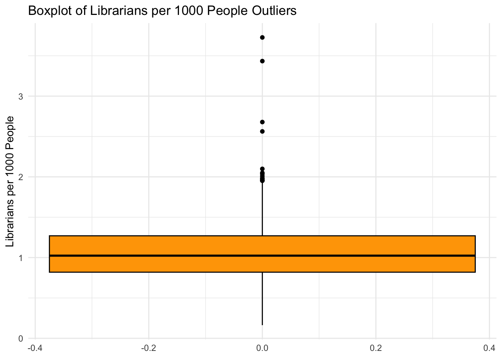
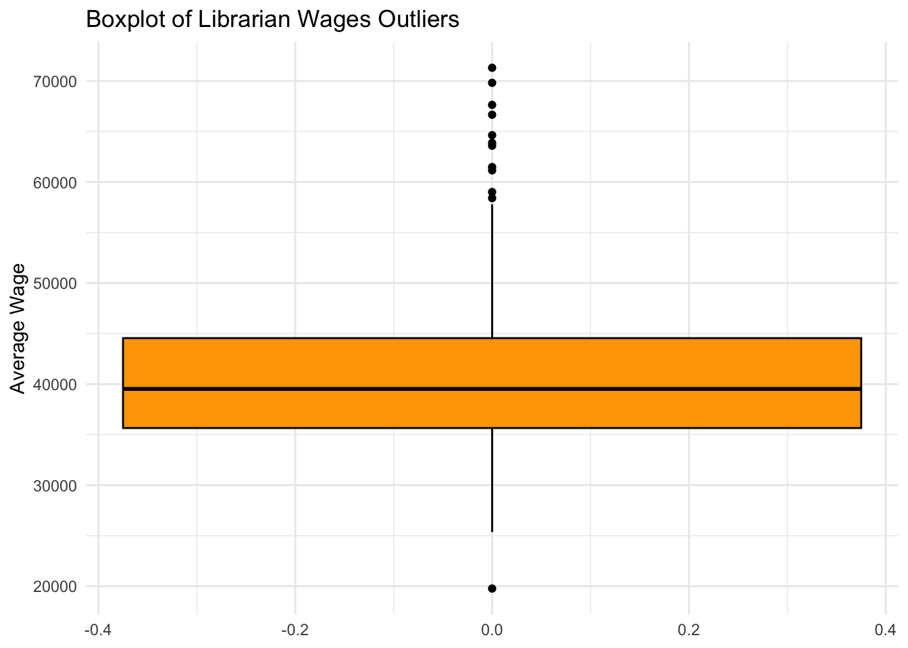

Impact of Library Concentration on Employment and Wages in the U.S
Author
Nana Frimpong
Abstract
The project will explore the relationship between concentration of libraries in metropolitan areas based on libraries employed per 1000 people and aslo observe how librarian wages differ across the states with different library systems. Our first dataset will focus on the concentration of libraries and the librarian employment in these metropolitan areas. The second dataset will will examine the wages of librarians across different states. The Welch T test will will be use on both data sets to analyze categories of variables. Our first datat set will examine the high and low library concentration for librarians employment. The second dataset will look into how wages differnt in above -median and below median wages through different states. My statistical analysis reveals that states with higher median wages earn an avergae of 47,635 dollars and states will lower median wages earn 34,227 dollars. Our analysis also show that metropolitan areas with high concentration of libraries will likely have a mean of 1.37 librarians employed for 1000 people, compared to 0.80 librarians employed per 1000 people in metropolitan areas with low concentration.
Introduction
The library has always been one of my favorite spaces to interact with people and just be comfortable in an environment where I can further my knowledge and learn from people. I always used to attend the big public library at Fordhman to pick out books to read in elementary school and participate in activities at the library. My younger siblings have recently been going to the library to learn how to play chess and watch interviews done by authors of their favorite books. This was a really wonderful experience for them as they spend time discussing their favorite books and authors. Their afterschool and weekend programs are really helpful to people around the city, as I even used the library resources for research, career development and discussions. Recently, when it was revealed that the library was canceling their seven day services, I was disappointed that budget cuts had affected this essential infrastructure that was providing services to millions of students around the city. However, libraries are impossible without librarians, who play a role in providing knowledge about research, career services, tech support, and other activities offered there. Funding has always been an issue with libraries across the coutnry and this lack of funding has affected the growth of the occupation. Recently, during my morning news reading,I learnt about how the recent floods in North Carolina destroyed the telecommunications system. This prompted people to gather at the library because that was the only facility with access to the internet and other tech support tools.
This data provides information about the population of librarians employed around the country in metropolitan areas per 1000 people and the concentration of library in these areas. The other dataset provides wages of librarians from the year 2014 to 2017 across different states. Some questiosn we can address with these datasets are “What is the relationship between the concentration of libraries in metropolitan areas and the number of librarians employed per 1,000 people?” and “How do librarian wages vary across states with different libraries and librarians?”
library(tidyverse)
── Attaching core tidyverse packages ──────────────────────── tidyverse 2.0.0 ──
✔ dplyr 1.1.4 ✔ readr 2.1.5
✔ forcats 1.0.0 ✔ stringr 1.5.1
✔ ggplot2 3.5.1 ✔ tibble 3.2.1
✔ lubridate 1.9.3 ✔ tidyr 1.3.1
✔ purrr 1.0.2
── Conflicts ────────────────────────────────────────── tidyverse_conflicts() ──
✖ dplyr::filter() masks stats::filter()
✖ dplyr::lag() masks stats::lag()
ℹ Use the conflicted package (<http://conflicted.r-lib.org/>) to force all conflicts to become errors
library(ggplot2)library(Hmisc)
Attaching package: 'Hmisc'
The following objects are masked from 'package:dplyr':
src, summarize
The following objects are masked from 'package:base':
format.pval, units
library(psych)
Attaching package: 'psych'
The following object is masked from 'package:Hmisc':
describe
The following objects are masked from 'package:ggplot2':
%+%, alpha
Rows: 373 Columns: 6
── Column specification ────────────────────────────────────────────────────────
Delimiter: ","
chr (6): prim_state, area_name, tot_emp, emp_prse, jobs_1000, loc_quotient
ℹ Use `spec()` to retrieve the full column specification for this data.
ℹ Specify the column types or set `show_col_types = FALSE` to quiet this message.
library(readr)employment_data <-read_csv("Employment by Location.csv")
Rows: 208 Columns: 11
── Column specification ────────────────────────────────────────────────────────
Delimiter: ","
chr (4): ID State, State, Detailed Occupation, Slug State
dbl (5): ID Year, Year, ID Detailed Occupation, Average Wage, Average Wage A...
lgl (2): ID Workforce Status, Workforce Status
ℹ Use `spec()` to retrieve the full column specification for this data.
ℹ Specify the column types or set `show_col_types = FALSE` to quiet this message.
Here I used a histogram, boxplot, and desnsity plot to first find the librarians per 1000 people, concentration for library location and a density to better visualize the concentration.
# Histogram of librarians per 1000 peopleggplot(librarians_data, aes(x = jobs_1000)) +geom_histogram(bins =30, fill ="blue", color ="black", alpha =0.7) +labs(title ="Distribution of Librarians per 1000 People", x ="Librarians per 1000 People", y ="Frequency") +theme_minimal()
# Boxplot of loc_quotient (library concentration)ggplot(librarians_data, aes(y = loc_quotient)) +geom_boxplot(fill ="green", color ="black") +labs(title ="Boxplot of Library Concentration (Location Quotient)", y ="Library Concentration") +theme_minimal()
# Density plot of loc_quotientggplot(librarians_data, aes(x = loc_quotient)) +geom_density(fill ="red", alpha =0.5) +labs(title ="Density Plot of Library Concentration", x ="Library Concentration", y ="Density") +theme_minimal()
Statistical Model For Librarian Employment
# Covariance and corrleation between loc_quotient and jobs_1000covariance <-cov(librarians_data$loc_quotient, librarians_data$jobs_1000)correlation <-cor(librarians_data$loc_quotient, librarians_data$jobs_1000)print(covariance)
[1] 0.1575644
print(correlation)
[1] 0.9999724
# Using boxplot to find outliersggplot(librarians_data, aes(y = jobs_1000)) +geom_boxplot(fill ="orange", color ="black") +labs(title ="Boxplot of Librarians per 1000 People Outliers", y ="Librarians per 1000 People") +theme_minimal()

Using the T- test I create hypothese test null hypothessis - the mean number of librarians per 1k poeple is teh same in low and high concentration of librarys. Alternative - The mean number of librarians per 1k people is the differennt area with high and low library concentration
# here am usign two catergories to find high and low concetration of location if library librarians_data$high_concentration <-ifelse(librarians_data$loc_quotient >median(librarians_data$loc_quotient), "High as in good ", "Low as in bad")# The t test is model i will use to compare both groupst_test_result <-t.test(jobs_1000 ~ high_concentration, data = librarians_data)print(t_test_result)
Welch Two Sample t-test
data: jobs_1000 by high_concentration
t = 18.867, df = 254.72, p-value < 2.2e-16
alternative hypothesis: true difference in means between group High as in good and group Low as in bad is not equal to 0
95 percent confidence interval:
0.5062352 0.6242301
sample estimates:
mean in group High as in good mean in group Low as in bad
1.3658370 0.8006043
Using the t- test my t-statistic was 18.867, indicating a large difference betetween both variables. The p value was low with a value of 2.2e^-16. The results show that area with higher concentration of libraries will have more librarians for 1000 people than areas with low concentration of people. Even though we have a small p-value, we can still reject the null hypothsis because of the large statisticall difference between areas with high and low concentration of libraries.
Warning in FUN(newX[, i], ...): no non-missing arguments to min; returning Inf
Warning in FUN(newX[, i], ...): no non-missing arguments to min; returning Inf
Warning in FUN(newX[, i], ...): no non-missing arguments to max; returning -Inf
Warning in FUN(newX[, i], ...): no non-missing arguments to max; returning -Inf
vars n mean sd median trimmed mad
ID Year 1 208 2015.50 1.12 2015.50 2015.50 1.48
Year* 2 208 2.50 1.12 2.50 2.50 1.48
ID State* 3 208 26.50 15.04 26.50 26.50 19.27
State* 4 208 26.50 15.04 26.50 26.50 19.27
ID Workforce Status 5 208 NaN NA NA NaN NA
Workforce Status 6 208 NaN NA NA NaN NA
ID Detailed Occupation 7 208 254021.00 0.00 254021.00 254021.00 0.00
Detailed Occupation* 8 208 1.00 0.00 1.00 1.00 0.00
Average Wage 9 208 40931.34 9041.55 39525.33 40295.04 6803.87
Average Wage Appx MOE 10 208 13973.03 6609.87 12085.66 13125.63 4945.45
Slug State* 11 208 26.50 15.04 26.50 26.50 19.27
Average_Wage 12 208 40931.34 9041.55 39525.33 40295.04 6803.87
min max range skew kurtosis se
ID Year 2014.00 2017.00 3.00 0.00 -1.38 0.08
Year* 1.00 4.00 3.00 0.00 -1.38 0.08
ID State* 1.00 52.00 51.00 0.00 -1.22 1.04
State* 1.00 52.00 51.00 0.00 -1.22 1.04
ID Workforce Status Inf -Inf -Inf NA NA NA
Workforce Status Inf -Inf -Inf NA NA NA
ID Detailed Occupation 254021.00 254021.00 0.00 NaN NaN 0.00
Detailed Occupation* 1.00 1.00 0.00 NaN NaN 0.00
Average Wage 19767.87 71314.55 51546.68 0.83 0.93 626.92
Average Wage Appx MOE 4754.04 36683.00 31928.96 1.20 0.98 458.31
Slug State* 1.00 52.00 51.00 0.00 -1.22 1.04
Average_Wage 19767.87 71314.55 51546.68 0.83 0.93 626.92
I use the same data visualizaton for the this data set
# Histogram of Average Wageggplot(data_clean_wages, aes(x = Average_Wage)) +geom_histogram(bins =30, fill ="blue", color ="black", alpha =0.7) +labs(title ="Distribution of Librarian Wages Across States", x ="Average Wage", y ="Frequency") +theme_minimal()
# Boxplot of Average Wage by Stateggplot(data_clean_wages, aes(x = State, y = Average_Wage)) +geom_boxplot(fill ="green", color ="black") +labs(title ="Boxplot of Librarian Wages by State", x ="State", y ="Average Wage") +theme_minimal() +theme(axis.text.x =element_text(angle =90, hjust =1))
# Density plot of Average Wageggplot(data_clean_wages, aes(x = Average_Wage)) +geom_density(fill ="red", alpha =0.5) +labs(title ="Density Plot of Librarian Wages", x ="Average Wage", y ="Density") +theme_minimal()
Statistical Model For Librarian Wages
Using the T- test I create hypotheses test null hypothesis - the mean librarian wage is the same for states with above and below median wages Alternative - the mean librarian wage are different between states with above median and below meidan wages
# make two catergories for people with good high and low wage data_clean_wages = data_clean_wages %>%mutate(wage_category =ifelse(Average_Wage >median(Average_Wage, na.rm =TRUE), "High", "Low") )
t_test_wages =t.test(Average_Wage ~ wage_category, data = data_clean_wages)print(t_test_wages)
Welch Two Sample t-test
data: Average_Wage by wage_category
t = 15.945, df = 160.03, p-value < 2.2e-16
alternative hypothesis: true difference in means between group High and group Low is not equal to 0
95 percent confidence interval:
11747.06 15068.38
sample estimates:
mean in group High mean in group Low
47635.19 34227.48
Box for outliers in the average wages
ggplot(data_clean_wages, aes(y = Average_Wage)) +geom_boxplot(fill ="orange", color ="black") +labs(title ="Boxplot of Librarian Wages Outliers", y ="Average Wage") +theme_minimal()

The t statistic was 15.965 which is big value showing that there is large differenc between high and low wages. When observing my p value test statistic it was pretty small wiht value of 2.2e^16 indicating that the null hypothesis willl be rejected. Through my t tes results librarain that live in states with above median wages can get between $15k and $11Km than the librarins that live in states with below median wages. This does show there is a disparity in wages across the states can be influecned by cost of livign, funding for librarys and local/ federal laws and policies.
Conclusion
Through the analysis on both datasets we can answer our original question.”What is the relationship between the concentration of libraries in metropolitan areas and the number of librarians employed per 1,000 people?” and “How do librarian wages vary across states with different libraries and librarians?” We first begun by analyzing the relationship between library concentration and number of librarians employed per 1000 people. With data wrangling and t test we found a significant difference between low and high library concentration and the number of librarians employed for 1000 people. We can observe that metropolitan areas with high concentration of libraries will likely have a mean of 1.37 librarians employed for 1000 people, compared to 0.80 librarians employed per 1000 people in metropolitan areas with low concentration. We can say that areas with high library concentration will have a higher demand for librarians
Through our second data set, we observed the librarian wages across different states with different concentration of library. Using the the t test we i was able to support my hypothesis test to show that there is significant difference between above and below median wages across the states. With our t test we can see that librarians that live in states with above median wages earn a mean wage 47,635 dollars and librarians with below median wage have wage of mean of 34,227 dollars. This shows the a the geographic factor of librarian wage is influenced by the the presence of library, cost of living, and state funding.
Overall, both data sets show some insights to the future profession of librarians across the country. Our first data set show relationship between library concentration and librarian employed and the second data set shows the wage disparities of the professioon based on geographic factors. My findings show that library funding and infrastructure play a role in the compensation and employment.